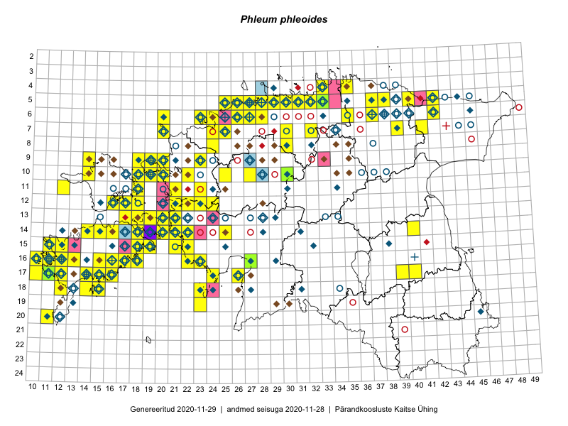

Phleum phleoides — loodtimut
Kaardile koondatud taksonid: Phleum phleoides (L.) H.Karst. (211)

Kaart põhineb 211 kirjel, neist:
vaatlusi 208
eksemplare 3
Kaasaegsed1 leiukohad asuvad 98 ruudus.
Andmed “Eesti taimede levikuatlasest”,2 sulgudes ruutude arv:3
● 1971–2005 (138)
○ 1921–1970 (53)
△ kuni 1920 (2)
+ hävinud (0)
? kaheldav (0)
Lisaruudud teistest andmebaasidest:4
ELF: 2006– . . . (6)
PKÜ: 2006– . . . (12)
ELF: 1971–2005 (4)
PKÜ: 1997–2005 (50)
| Ruut | Vaatleja(d) | Vaatlusaeg | Kirje PlutoFis |
|---|---|---|---|
| 14-15 | Toomas Kukk, Eerik Leibak | 2015-08-09 | ruut/ala: Phleum phleoides (L.) H.Karst. |
| 20-11 | Toomas Kukk, Peedu Saar | 2015-08-05 | ruut/ala: Phleum phleoides (L.) H.Karst. |
| 05-31 | Rein Kalamees | 2015-08-09 | ruut/ala: Phleum phleoides (L.) H.Karst. |
| 06-27 | Toomas Kukk | 2015-06-19 | ruut/ala: Phleum phleoides (L.) H.Karst. |
| 16-10 | Toomas Kukk | 2014-06-21 | ruut/ala: Phleum phleoides (L.) H.Karst. |
| 16-12 | Toomas Kukk, Mari Reitalu | 2014-06-20 | ruut/ala: Phleum phleoides (L.) H.Karst. |
| 15-19 | Toomas Kukk | 2014-06-17 | ruut/ala: Phleum phleoides (L.) H.Karst. |
| 12-21 | Tiit Hallikma, Toomas Kukk | 2015-08-27 | ruut/ala: Phleum phleoides (L.) H.Karst. |
| 18-15 | Ott Luuk, Elle Roosaluste, Jaak-Albert Metsoja | 2015-06-16 | ruut/ala: Phleum phleoides (L.) H.Karst. |
| 16-17 | Peedu Saar | 2015-09-07 | ruut/ala: Phleum phleoides (L.) H.Karst. |
| 16-17 | Meeli Mesipuu, Kadri Tali | 2015-07-06 | ruut/ala: Phleum phleoides (L.) H.Karst. |
| 13-17 | Meeli Mesipuu, Kadri Tali | 2015-07-08 | ruut/ala: Phleum phleoides (L.) H.Karst. |
| 18-23 | Ott Luuk, Elle Roosaluste | 2015-05-29 | ruut/ala: Phleum phleoides (L.) H.Karst. |
| 14-22 | Toomas Kukk, Ott Luuk, Sander Laherand | 2014-08-24 | ruut/ala: Phleum phleoides (L.) H.Karst. |
| 07-41 | Thea Kull, Eerik Leibak | 2015-09-10 | ruut/ala: Phleum phleoides (L.) H.Karst. |
| 11-12 | Eeva-Maria Jeletsky, Tarmo Niitla | 2015-06-27 | ruut/ala: Phleum phleoides (L.) H.Karst. |
| 17-24 | Maret Gerz, Leena Gerz | 2015-08-12 | ruut/ala: Phleum phleoides (L.) H.Karst. |
| 15-12 | Mari Reitalu | 2014-07-31 | ruut/ala: Phleum phleoides (L.) H.Karst. |
| 20-11 | Mari Reitalu, Triin Reitalu | 2014-08-15 | ruut/ala: Phleum phleoides (L.) H.Karst. |
| 07-25 | Erkki Otsman, Sergei Smirnov | 2015-07-17 | ruut/ala: Phleum phleoides (L.) H.Karst. |
| 15-19 | Meeli Mesipuu | 2015-06-21 | ruut/ala: Phleum phleoides (L.) H.Karst. |
| 16-10 | Mari Reitalu, Oliver Parrest | 2015-08-04 | ruut/ala: Phleum phleoides (L.) H.Karst. |
| 05-29 | Erkki Otsman, Sergei Smirnov | 2015-07-12 | ruut/ala: Phleum phleoides (L.) H.Karst. |
| 16-12 | Mari Reitalu | 2015-08-23 | ruut/ala: Phleum phleoides (L.) H.Karst. |
| 16-12 | Mari Reitalu | 2015-07-27 | ruut/ala: Phleum phleoides (L.) H.Karst. |
| 16-12 | Mari Reitalu, Triin Reitalu | 2015-07-20 | ruut/ala: Phleum phleoides (L.) H.Karst. |
| 14-40 | Erkki Otsman, Sergei Smirnov | 2015-07-22 | ruut/ala: Phleum phleoides (L.) H.Karst. |
| 16-23 | Maret Gerz, Leena Gerz | 2015-08-16 | ruut/ala: Phleum phleoides (L.) H.Karst. |
| 18-12 | Mari Reitalu, Sirje Azarov, Oliver Parrest | 2015-08-02 | ruut/ala: Phleum phleoides (L.) H.Karst. |
| 17-10 | Mari Reitalu, Oliver Parrest | 2015-08-04 | ruut/ala: Phleum phleoides (L.) H.Karst. |
| 05-29 | Thea Kull | 2014-07-14 | ruut/ala: Phleum phleoides (L.) H.Karst. |
| 15-11 | Mari Reitalu, Oliver Parrest | 2015-07-16 | ruut/ala: Phleum phleoides (L.) H.Karst. |
| 16-11 | Triin Reitalu, Mari Reitalu | 2015-08-09 | ruut/ala: Phleum phleoides (L.) H.Karst. |
| 17-11 | Mari Reitalu, Triin Reitalu | 2015-08-05 | ruut/ala: Phleum phleoides (L.) H.Karst. |
| 16-10 | Sirje Azarov, Mari Reitalu | 2015-06-22 | ruut/ala: Phleum phleoides (L.) H.Karst. |
| 16-11 | Sirje Azarov, Mari Reitalu | 2015-06-22 | ruut/ala: Phleum phleoides (L.) H.Karst. |
| 16-13 | Sirje Azarov, Aira Alasi | 2015-07-20 | ruut/ala: Phleum phleoides (L.) H.Karst. |
| 16-16 | Sirje Azarov, Aira Alasi | 2015-07-28 | ruut/ala: Phleum phleoides (L.) H.Karst. |
| 14-18 | Karin Kikas, Elle Rajandu | 2015-07-21 | ruut/ala: Phleum phleoides (L.) H.Karst. |
| 17-16 | Sirje Azarov, Aira Alasi | 2015-08-12 | ruut/ala: Phleum phleoides (L.) H.Karst. |
| 06-42 | Mari Metsoja, Jaak-Albert Metsoja | 2015-07-21 | ruut/ala: Phleum phleoides (L.) H.Karst. |
| 06-24 | Mari Metsoja, Jaak-Albert Metsoja | 2015-07-31 | ruut/ala: Phleum phleoides (L.) H.Karst. |
| 05-25 | Mari Metsoja, Jaak-Albert Metsoja | 2015-07-30 | ruut/ala: Phleum phleoides (L.) H.Karst. |
| 17-16 | Sirje Azarov, Aira Alasi | 2015-08-17 | ruut/ala: Phleum phleoides (L.) H.Karst. |
| 18-15 | Mari Reitalu | 2014-07-17 | ruut/ala: Phleum phleoides (L.) H.Karst. |
| 17-14 | Mari Reitalu | 2014-07-21 | ruut/ala: Phleum phleoides (L.) H.Karst. |
| 15-18 | Karin Kikas, Elle Rajandu | 2015-07-24 | ruut/ala: Phleum phleoides (L.) H.Karst. |
| 07-39 | Kaili Orav, Silvia Pihu | 2015-06-17 | ruut/ala: Phleum phleoides (L.) H.Karst. |
| 06-24 | Jaak-Albert Metsoja, Mari Metsoja, Ott Luuk | 2015-06-05 | ruut/ala: Phleum phleoides (L.) H.Karst. |
| 06-23 | Mari Metsoja, Jaak-Albert Metsoja, Ott Luuk | 2015-06-04 | ruut/ala: Phleum phleoides (L.) H.Karst. |
| 06-23 | Jaak-Albert Metsoja, Mari Metsoja, Ott Luuk | 2015-06-05 | ruut/ala: Phleum phleoides (L.) H.Karst. |
| 13-20 | Kadri Tali | 2015-06-05 | ruut/ala: Phleum phleoides (L.) H.Karst. |
| 13-19 | Kadri Tali | 2015-06-03 | ruut/ala: Phleum phleoides (L.) H.Karst. |
| 10-20 | Ott Luuk, Peedu Saar | 2014-07-29 | ruut/ala: Phleum phleoides (L.) H.Karst. |
| 17-11 | Peedu Saar, Toomas Kukk, Ott Luuk, Thea Kull, Mari Reitalu | 2014-06-28 | ruut/ala: Phleum phleoides (L.) H.Karst. |
| 10-27 | Peedu Saar, Ott Luuk, Meeli Mesipuu, Thea Kull, Kersti Püssa, Rein Kalamees, Toomas Kukk | 2014-06-10 | ruut/ala: Phleum phleoides (L.) H.Karst. |
| 16-11 | Mari Reitalu, Triin Reitalu | 2015-08-09 | ruut/ala: Phleum phleoides (L.) H.Karst. |
| 06-27 | Tõnu Ploompuu | 2015-08-11 | ruut/ala: Phleum phleoides (L.) H.Karst. |
| 11-23 | Hanna-Eliisa Luts, Marian Hiie, Tõnu Ploompuu | 2015-08-04 | ruut/ala: Phleum phleoides (L.) H.Karst. |
| 10-19 | Toomas Kukk, Peedu Saar | 2016-05-12 | ruut/ala: Phleum phleoides (L.) H.Karst. |
| 14-22 | Toomas Kukk, Peedu Saar | 2016-05-14 | ruut/ala: Phleum phleoides (L.) H.Karst. |
| 17-26 | Toomas Kukk, Tiit Hallikma | 2016-06-04 | ruut/ala: Phleum phleoides (L.) H.Karst. |
| 09-23 | Hanna-Eliisa Luts, Tõnu Ploompuu | 2015-07-16 | ruut/ala: Phleum phleoides (L.) H.Karst. |
| 10-22 | Tõnu Ploompuu | 2015-05-20 | ruut/ala: Phleum phleoides (L.) H.Karst. |
| 06-28 | Toomas Kukk | 2016-07-04 | ruut/ala: Phleum phleoides (L.) H.Karst. |
| 09-18 | Toomas Kukk, Sander Laherand | 2016-07-07 | ruut/ala: Phleum phleoides (L.) H.Karst. |
| 14-25 | Toomas Kukk, Oliver Parrest | 2016-07-08 | ruut/ala: Phleum phleoides (L.) H.Karst. |
| 05-26 | Tiina Elvisto, Eerik Leibak | 2016-07-04 | ruut/ala: Phleum phleoides (L.) H.Karst. |
| 06-26 | Tiina Elvisto, Eerik Leibak | 2016-07-04 | ruut/ala: Phleum phleoides (L.) H.Karst. |
| 15-19 | Mari Reitalu, Triin Reitalu | 2016-06-30 | ruut/ala: Phleum phleoides (L.) H.Karst. |
| 10-18 | Sander Laherand, Toomas Kukk | 2016-07-07 | ruut/ala: Phleum phleoides (L.) H.Karst. |
| 14-21 | Mari Reitalu, Oliver Parrest | 2016-07-04 | ruut/ala: Phleum phleoides (L.) H.Karst. |
| 14-22 | Mari Reitalu, Oliver Parrest | 2016-07-04 | ruut/ala: Phleum phleoides (L.) H.Karst. |
| 05-37 | Tõnu Ploompuu, Eerik Leibak | 2016-07-27 | ruut/ala: Phleum phleoides (L.) H.Karst. |
| 05-30 | Sander Laherand, Eerik Leibak | 2016-07-29 | ruut/ala: Phleum phleoides (L.) H.Karst. |
| 05-25 | Sander Laherand, Toomas Kukk | 2016-07-05 | ruut/ala: Phleum phleoides (L.) H.Karst. |
| 14-22 | Erkki Otsman, Sergei Smirnov | 2016-06-23 | ruut/ala: Phleum phleoides (L.) H.Karst. |
| 14-21 | Erkki Otsman, Sergei Smirnov | 2016-06-24 | ruut/ala: Phleum phleoides (L.) H.Karst. |
| 12-17 | Thea Kull, Sander Laherand | 2016-08-11 | ruut/ala: Phleum phleoides (L.) H.Karst. |
| 17-14 | Toomas Kukk, Meeli Mesipuu, Johannes Kõdar | 2016-08-11 | ruut/ala: Phleum phleoides (L.) H.Karst. |
| 10-14 | Sander Laherand, Toomas Kukk, Nele Jõessar | 2016-08-09 | ruut/ala: Phleum phleoides (L.) H.Karst. |
| 11-21 | Aat Sarv, Maret Gerz | 2016-07-07 | ruut/ala: Phleum phleoides (L.) H.Karst. |
| 11-23 | Aat Sarv, Maret Gerz | 2016-07-06 | ruut/ala: Phleum phleoides (L.) H.Karst. |
| 05-29 | Toomas Kukk, Sander Laherand | 2016-08-29 | ruut/ala: Phleum phleoides (L.) H.Karst. |
| 18-23 | Karin Kaljund, Kaire Lanno, Indrek Melts | 2016-07-27 | ruut/ala: Phleum phleoides (L.) H.Karst. |
| 19-23 | Karin Kaljund, Kaire Lanno, Indrek Melts | 2016-07-28 | ruut/ala: Phleum phleoides (L.) H.Karst. |
| 05-32 | Toomas Kukk, Sander Laherand | 2016-08-31 | ruut/ala: Phleum phleoides (L.) H.Karst. |
| 17-16 | Toomas Kukk, Meeli Mesipuu | 2016-08-12 | ruut/ala: Phleum phleoides (L.) H.Karst. |
| 12-24 | Sirje Azarov, Meeli Mesipuu | 2016-07-05 | ruut/ala: Phleum phleoides (L.) H.Karst. |
| 08-30 | Rein Kalamees, Liina Oja | 2016-07-04 | ruut/ala: Phleum phleoides (L.) H.Karst. |
| 07-30 | Toomas Kukk, Peedu Saar | 2016-09-09 | ruut/ala: Phleum phleoides (L.) H.Karst. |
| 09-19 | Rein Kalamees, Liina Oja | 2016-07-07 | ruut/ala: Phleum phleoides (L.) H.Karst. |
| 10-19 | Rein Kalamees, Liina Oja | 2016-07-07 | ruut/ala: Phleum phleoides (L.) H.Karst. |
| 12-23 | Mari Reitalu, Oliver Parrest | 2016-07-05 | ruut/ala: Phleum phleoides (L.) H.Karst. |
| 14-14 | Mari Reitalu, Sirje Azarov | 2016-07-26 | ruut/ala: Phleum phleoides (L.) H.Karst. |
| 14-18 | Mari Reitalu, Sirje Azarov | 2016-08-09 | ruut/ala: Phleum phleoides (L.) H.Karst. |
| 16-18 | Mari Reitalu, Sirje Azarov | 2016-08-08 | ruut/ala: Phleum phleoides (L.) H.Karst. |
| 17-40 | Kersti Püssa, Rein Kalamees | 2016-07-28 | ruut/ala: Phleum phleoides (L.) H.Karst. |
| 20-11 | Meeli Mesipuu | 2016-09-25 | ruut/ala: Phleum phleoides (L.) H.Karst. |
| 18-15 | Peedu Saar | 2016-08-30 | ruut/ala: Phleum phleoides (L.) H.Karst. |
| 19-23 | Ott Luuk, Peedu Saar | 2016-09-21 | ruut/ala: Phleum phleoides (L.) H.Karst. |
| 09-18 | Ott Luuk, Meeli Mesipuu | 2016-09-16 | ruut/ala: Phleum phleoides (L.) H.Karst. |
| 10-19 | Ott Luuk, Meeli Mesipuu | 2016-09-15 | ruut/ala: Phleum phleoides (L.) H.Karst. |
| 18-14 | Ott Luuk | 2016-08-30 | ruut/ala: Phleum phleoides (L.) H.Karst. |
| 16-13 | Toomas Kukk, Meeli Mesipuu | 2016-10-05 | ruut/ala: Phleum phleoides (L.) H.Karst. |
| 15-11 | Meeli Mesipuu, Toomas Kukk, Mari Reitalu | 2016-10-07 | ruut/ala: Phleum phleoides (L.) H.Karst. |
| 15-12 | Toomas Kukk, Meeli Mesipuu | 2016-10-08 | ruut/ala: Phleum phleoides (L.) H.Karst. |
| 05-42 | Tiit Hallikma, Tõnu Ploompuu | 2016-07-26 | ruut/ala: Phleum phleoides (L.) H.Karst. |
| 09-20 | Peedu Saar, Timo Luhamäe | 2016-07-07 | ruut/ala: Phleum phleoides (L.) H.Karst. |
| 15-22 | Meeli Mesipuu, Sirje Azarov | 2016-07-04 | ruut/ala: Phleum phleoides (L.) H.Karst. |
| 09-14 | Meeli Mesipuu, Maret Gerz | 2016-08-09 | ruut/ala: Phleum phleoides (L.) H.Karst. |
| 09-20 | Kadi-Liis Kesler | 2015-06-25 | ruut/ala: Phleum phleoides (L.) H.Karst. |
| 06-20 | Jaak-Albert Metsoja, Mari Metsoja | 2016-06-30 | ruut/ala: Phleum phleoides (L.) H.Karst. |
| 07-20 | Jaak-Albert Metsoja, Mari Metsoja | 2016-07-01 | ruut/ala: Phleum phleoides (L.) H.Karst. |
| 17-15 | Mari Reitalu | 2006-09-12 | ruut/ala: Phleum phleoides (L.) H.Karst. |
| 16-18 | Mari Reitalu | 2006-05-20 | ruut/ala: Phleum phleoides (L.) H.Karst. |
| 17-16 | Mari Reitalu | 2009-08-08 | ruut/ala: Phleum phleoides (L.) H.Karst. |
| 17-15 | Mari Reitalu | 2009-08-27 | ruut/ala: Phleum phleoides (L.) H.Karst. |
| 16-17 | Mari Reitalu | 2008-07-08 | ruut/ala: Phleum phleoides (L.) H.Karst. |
| 15-12 | Mari Reitalu | 2007-04-26 | ruut/ala: Phleum phleoides (L.) H.Karst. |
| 15-11 | Mari Reitalu | 2007-09-12 | ruut/ala: Phleum phleoides (L.) H.Karst. |
| 17-16 | Mari Reitalu | 2010-07-02 | ruut/ala: Phleum phleoides (L.) H.Karst. |
| 15-11 | Mari Reitalu | 2007-05-31 | ruut/ala: Phleum phleoides (L.) H.Karst. |
| 17-11 | Mari Reitalu | 2007-09-07 | ruut/ala: Phleum phleoides (L.) H.Karst. |
| 12-18 | Toomas Kukk | 2017-05-06 | ruut/ala: Phleum phleoides (L.) H.Karst. |
| 14-21 | Toomas Kukk | 2008-07-03 | ruut/ala: Phleum phleoides (L.) H.Karst. |
| 14-21 | Toomas Kukk | 2009-06-07 | ruut/ala: Phleum phleoides (L.) H.Karst. |
| 14-21 | Toomas Kukk, Ott Luuk | 2009-06-29 | ruut/ala: Phleum phleoides (L.) H.Karst. |
| 05-30 | Peedu Saar, Ott Luuk | 2017-05-11 | ruut/ala: Phleum phleoides (L.) H.Karst. |
| 08-24 | Ott Luuk, Peedu Saar | 2017-05-12 | ruut/ala: Phleum phleoides (L.) H.Karst. |
| 07-20 | Peedu Saar, Elle Roosaluste, Kaili Orav | 2017-05-29 | ruut/ala: Phleum phleoides (L.) H.Karst. |
| 06-20 | Peedu Saar | 2017-05-30 | ruut/ala: Phleum phleoides (L.) H.Karst. |
| 12-18 | Peedu Saar, Ilmar Uibopuu | 2017-06-15 | ruut/ala: Phleum phleoides (L.) H.Karst. |
| 12-18 | Toomas Kukk, Peeter Pärn | 2017-06-15 | ruut/ala: Phleum phleoides (L.) H.Karst. |
| 07-24 | Toomas Kukk, Ilmar Uibopuu | 2017-07-30 | ruut/ala: Phleum phleoides (L.) H.Karst. |
| 06-24 | Toomas Kukk, Ilmar Uibopuu, Kadri Kuusksalu | 2017-07-26 | ruut/ala: Phleum phleoides (L.) H.Karst. |
| 06-23 | Toomas Kukk, Ilmar Uibopuu, Kadri Kuusksalu | 2017-07-26 | ruut/ala: Phleum phleoides (L.) H.Karst. |
| 06-23 | Toomas Kukk | 2017-07-27 | ruut/ala: Phleum phleoides (L.) H.Karst. |
| 06-23 | Toomas Kukk | 2017-07-27 | ruut/ala: Phleum phleoides (L.) H.Karst. |
| 13-20 | Toomas Kukk, Peedu Saar, Ott Luuk | 2017-08-26 | ruut/ala: Phleum phleoides (L.) H.Karst. |
| 12-17 | Toomas Kukk, Indrek Tammekänd | 2017-09-11 | ruut/ala: Phleum phleoides (L.) H.Karst. |
| 14-20 | Meeli Mesipuu | 2017-08-07 | ruut/ala: Phleum phleoides (L.) H.Karst. |
| 05-26 | Peedu Saar, Timo Luhamäe | 2017-08-10 | ruut/ala: Phleum phleoides (L.) H.Karst. |
| 05-28 | Erkki Otsman, Sergei Smirnov | 2015-06-26 | ruut/ala: Phleum phleoides (L.) H.Karst. |
| 09-20 | Toomas Kukk, Peedu Saar | 2016-05-13 | ruut/ala: Phleum phleoides (L.) H.Karst. |
| 05-28 | Toomas Kukk, Peedu Saar | 2016-08-03 | ruut/ala: Phleum phleoides (L.) H.Karst. |
| 17-12 | Mari Reitalu | 2016-09-16 | punkt: Phleum phleoides (L.) H.Karst. |
| 06-24 | Ilmar Uibopuu, Kadri Kuusksalu | 2017-07-27 | ruut/ala: Phleum phleoides (L.) H.Karst. |
| 14-21 | Toomas Kukk | 2008-07-03 | ruut/ala: Phleum phleoides (L.) H.Karst. |
| 15-18 | Elle Rajandu, Karin Kikas | 2015-07-24 | ruut/ala: Phleum phleoides (L.) H.Karst. |
| 05-31 | Rein Kalamees | 2017-07-24 | ruut/ala: Phleum phleoides (L.) H.Karst. |
| 05-30 | Rein Kalamees | 2017-08-07 | ruut/ala: Phleum phleoides (L.) H.Karst. |
| 06-24 | Rein Kalamees | 2017-07-05 | ruut/ala: Phleum phleoides (L.) H.Karst. |
| 06-24 | Rein Kalamees | 2017-07-27 | ruut/ala: Phleum phleoides (L.) H.Karst. |
| 18-23 | Mari Reitalu, Sirje Azarov, Ester Valdvee, Triin Reitalu | 2017-07-11 | ruut/ala: Phleum phleoides (L.) H.Karst. |
| 18-23 | Meeli Mesipuu | 2018-05-11 | ruut/ala: Phleum phleoides (L.) H.Karst. |
| 13-18 | Mari Reitalu, Merit Otsus | 2018-06-16 | punkt: Phleum phleoides (L.) H.Karst. |
| 11-18 | Toomas Kukk | 2018-07-09 | ruut/ala: Phleum phleoides (L.) H.Karst. |
| 10-18 | Toomas Kukk | 2018-07-10 | ruut/ala: Phleum phleoides (L.) H.Karst. |
| 06-37 | Peedu Saar, Toomas Kukk | 2018-08-08 | ruut/ala: Phleum phleoides (L.) H.Karst. |
| 06-24 | Peedu Saar, Jaak-Albert Metsoja, Mari Metsoja | 2018-07-06 | ruut/ala: Phleum phleoides (L.) H.Karst. |
| 06-23 | Ott Luuk, Meeli Mesipuu, Jaak-Albert Metsoja, Mari Metsoja, Peedu Saar | 2018-07-04 | ruut/ala: Phleum phleoides (L.) H.Karst. |
| 06-23 | Ott Luuk, Meeli Mesipuu, Jaak-Albert Metsoja, Mari Metsoja, Peedu Saar | 2018-07-05 | ruut/ala: Phleum phleoides (L.) H.Karst. |
| 06-23 | Ott Luuk, Meeli Mesipuu, Jaak-Albert Metsoja, Mari Metsoja | 2018-07-05 | ruut/ala: Phleum phleoides (L.) H.Karst. |
| 11-18 | Peedu Saar | 2018-07-09 | punkt: Phleum phleoides (L.) H.Karst. |
| 11-18 | Peedu Saar | 2018-07-09 | ruut/ala: Phleum phleoides (L.) H.Karst. |
| 15-21 | Peedu Saar | 2018-09-18 | ruut/ala: Phleum phleoides (L.) H.Karst. |
| 12-18 | Toomas Kukk | 2018-09-16 | ruut/ala: Phleum phleoides (L.) H.Karst. |
| 13-21 | Mari Reitalu | 2018-07-05 | punkt: Phleum phleoides (L.) H.Karst. |
| 17-11 | Mari Reitalu | 2006-09-06 | ruut/ala: Phleum phleoides (L.) H.Karst. |
| 11-18 | Meeli Mesipuu | 2018-07-09 | ruut/ala: Phleum phleoides (L.) H.Karst. |
| 10-18 | Meeli Mesipuu | 2018-07-10 | ruut/ala: Phleum phleoides (L.) H.Karst. |
| 06-27 | Meeli Mesipuu | 2019-06-16 | ruut/ala: Phleum phleoides (L.) H.Karst. |
| 06-27 | Meeli Mesipuu | 2019-06-16 | ruut/ala: Phleum phleoides (L.) H.Karst. |
| 15-11 | Mari Reitalu, Triin Reitalu | 2019-06-20 | punkt: Phleum phleoides (L.) H.Karst. |
| 12-16 | Toomas Kukk, Indrek Tammekänd | 2019-06-03 | ruut/ala: Phleum phleoides (L.) H.Karst. |
| 12-18 | Toomas Kukk | 2019-06-01 | ruut/ala: Phleum phleoides (L.) H.Karst. |
| 04-35 | Meeli Mesipuu | 2019-08-08 | punkt: Phleum phleoides (L.) H.Karst. |
| 04-35 | Meeli Mesipuu | 2019-08-08 | ruut/ala: Phleum phleoides (L.) H.Karst. |
| 17-39 | Thea Kull | 2019-07-23 | punkt: Phleum phleoides (L.) H.Karst. |
| 06-26 | Rein Kalamees | 2019-08-27 | ruut/ala: Phleum phleoides (L.) H.Karst. |
| 05-29 | Rein Kalamees | 2019-08-27 | ruut/ala: Phleum phleoides (L.) H.Karst. |
| 06-35 | Toomas Kukk, Rein Kalamees, Kaur Maran | 2019-08-07 | ruut/ala: Phleum phleoides (L.) H.Karst. |
| 10-19 | Peedu Saar, Toomas Kukk | 2019-09-18 | ruut/ala: Phleum phleoides (L.) H.Karst. |
| 04-33 | Peedu Saar, Ott Luuk | 2019-06-11 | ruut/ala: Phleum phleoides (L.) H.Karst. |
| 10-22 | Toomas Kukk, Peedu Saar | 2019-09-19 | ruut/ala: Phleum phleoides (L.) H.Karst. |
| 09-19 | Toomas Kukk, Peedu Saar | 2019-09-17 | ruut/ala: Phleum phleoides (L.) H.Karst. |
| 05-27 | Peedu Saar, Ott Luuk | 2019-09-02 | ruut/ala: Phleum phleoides (L.) H.Karst. |
| 06-27 | Peedu Saar, Ott Luuk | 2019-09-02 | ruut/ala: Phleum phleoides (L.) H.Karst. |
| 10-20 | Ott Luuk | 2019-09-18 | punkt: Phleum phleoides (L.) H.Karst. |
| 10-20 | Ott Luuk | 2019-09-18 | ruut/ala: Phleum phleoides (L.) H.Karst. |
| 13-21 | Toomas Kukk, Peedu Saar | 2019-09-25 | ruut/ala: Phleum phleoides (L.) H.Karst. |
| 14-14 | Toomas Kukk, Peedu Saar, Ott Luuk | 2019-05-15 | punkt: Phleum phleoides (L.) H.Karst. |
| 17-11 | Mari Reitalu, Sirje Azarov | 2019-07-10 | ruut/ala: Phleum phleoides (L.) H.Karst. |
| 10-18 | Ott Luuk | 2019-09-17 | punkt: Phleum phleoides (L.) H.Karst. |
| 10-18 | Ott Luuk | 2019-09-17 | ruut/ala: Phleum phleoides (L.) H.Karst. |
| 05-31 | Peedu Saar, Timo Luhamäe | 2019-08-06 | ruut/ala: Phleum phleoides (L.) H.Karst. |
| 05-30 | Peedu Saar, Timo Luhamäe | 2019-08-06 | ruut/ala: Phleum phleoides (L.) H.Karst. |
| 07-39 | Peedu Saar, Ott Luuk | 2019-07-04 | ruut/ala: Phleum phleoides (L.) H.Karst. |
| 05-38 | Peedu Saar, Ott Luuk | 2019-07-05 | ruut/ala: Phleum phleoides (L.) H.Karst. |
| 05-40 | Peedu Saar, Ott Luuk | 2019-07-05 | ruut/ala: Phleum phleoides (L.) H.Karst. |
| 05-40 | Peedu Saar, Ott Luuk | 2019-07-05 | ruut/ala: Phleum phleoides (L.) H.Karst. |
| 05-25 | Ott Luuk, Peedu Saar | 2019-09-02 | punkt: Phleum phleoides (L.) H.Karst. |
| 05-26 | Ott Luuk, Peedu Saar | 2019-09-02 | ruut/ala: Phleum phleoides (L.) H.Karst. |
| 06-27 | Ott Luuk, Peedu Saar | 2019-09-02 | punkt: Phleum phleoides (L.) H.Karst. |
| 06-27 | Ott Luuk, Peedu Saar | 2019-09-02 | punkt: Phleum phleoides (L.) H.Karst. |
| 05-27 | Ott Luuk, Peedu Saar | 2019-09-02 | punkt: Phleum phleoides (L.) H.Karst. |
| 18-23 | Indrek Tammekänd | 2018-05-31 | ruut/ala: Phleum phleoides (L.) H.Karst. |
| 16-27 | Indrek Tammekänd | 2017-07-29 | TAA0143395: Phleum phleoides (L.) H.Karst. |
| 15-37 | Lauri Mällo | 2019-06-13 | JPGH19465: Phleum phleoides (L.) H.Karst. |
| 05-33 | Ott Luuk, Peedu Saar | 2019-06-11 | TAA0150065: Phleum phleoides (L.) H.Karst. |
Kaasaegsed leiukohad (tähistatud värvitud ruutudega) põhinevad peamiselt 2014–2019 välitööandmetel. Väiksemal määral on andmebaasi kantud vanemaid leiuandmeid aastatest 2006–2013.↩︎
Kukk, T., Kull, T., Eesti taimede levikuatlas. Eesti Maaülikool, Põllumajandus- ja Keskkonnainstituut, Tartu, 2005.↩︎
NB! 2005. aasta atlase andmestikus katavad uuemad leiud vanemaid. Näiteks kui liik on ruudus registreeritud 1971–2005, siis pole võimalik öelda, kas ta oli sellest ruudust teada ka enne 1970. aastat. Vana atlase andmetel hävinud ja kaheldavaid leiukohti pole hilisemate (taas)leidude põhjal korrigeeritud.↩︎
Eestimaa Looduse Fondi (ELF) ja Pärandkoosluste Kaitse Ühingu (PKÜ) andmebaasid sisaldavad inventeeritud koosluste kirjeldusi ja liigiloendeid. Neist andmekogudest on kaardile lisatud lisatud vaid need ruudud, millest uue atlase andmekogus taksoni kohta kirjeid veel pole. Kõrvale on jäetud teadaolevalt kaheldavad määrangud. Kaartidel katavad uuema perioodi andmed vanemaid, PKÜ omad ELFi omi. Kattumise tõttu võib kaardil näha olla vähem mingi kategooria ruute kui legendis olev arv näitab. ELFi ja PKÜ andmed ei kajastu hetkel vaatluste tabelis ega ruutude liigiloendites.↩︎